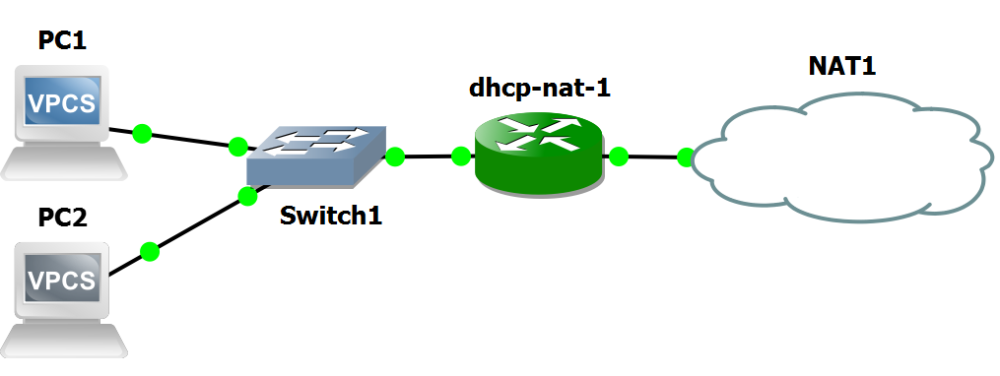
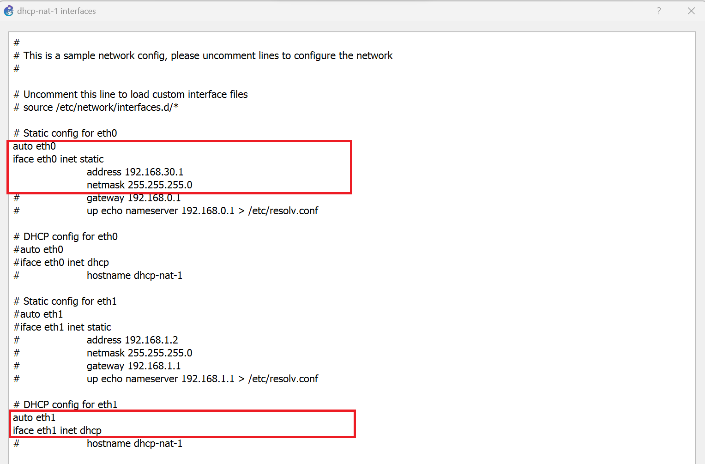
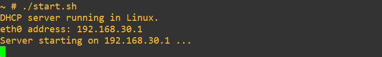
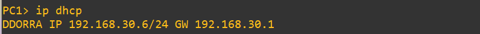
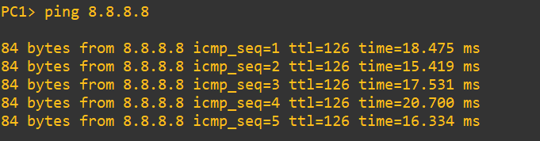
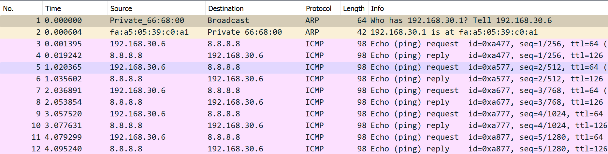
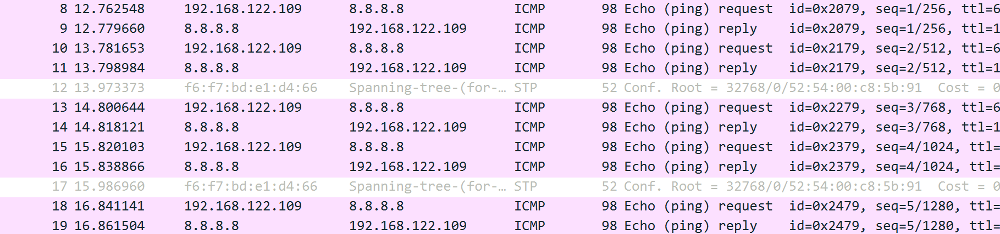

The purpose of this lab is to show how end-systems attached to a private LAN can reach hosts in the public Internet by means of a NAT router.
NOTICE: this lab requires the GNS3 VM to instantiate a Docker container of a Linux-based DHCP server.


./start.sh

ip dhcpA sequence of DHCP messages (Discover, Offer, Request, Ack) is exchanged between PC1 and the DHCP server until an IP address (e.g. 192.168.30.6) is assigned to PC1.

ping 8.8.8.8and verify that answers are received.

The picture below shows the packets captured by Wireshark running on the link connecting Switch1 to dhcp-nat-1 during ping.

The picture below shows the packets captured by Wireshark running on the link connecting dhcp-nat-1 to NAT1 during ping.

Notice that ICMP packets generated from PC1 (echo requests) have the IP source address translated from 192.168.30.6 into 192.168.122.109.
Conversely, incoming ICMP packets (echo replies) have the IP destination address translated fron 192.168.122.109 into 192.168.30.6
Copyright (c) 2024 - Roberto Canonico
Last updated: October 3, 2024 by Roberto Canonico